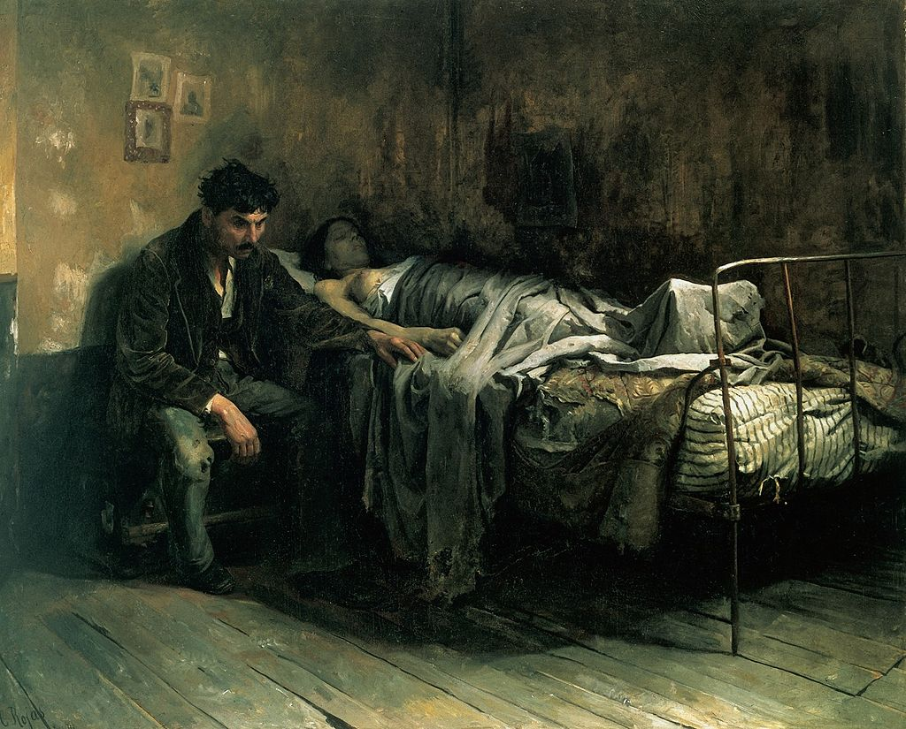

|
Durante la Rivoluzione Industriale, le condizioni di vita nelle città industriali erano spesso sovraffollate e insalubri, il che favoriva la diffusione delle malattie infettive.
Le città industriali erano affollate, con abitazioni sovraffollate e scarsa igiene. Le condizioni di vita nelle baraccopoli e nei quartieri poveri erano particolarmente precarie, con pochi servizi igienici e scarsa pulizia.
Durante il XIX secolo, le epidemie di colera e tifo erano comuni nelle città industriali. L'acqua contaminata e la scarsa igiene contribuivano alla diffusione rapida di queste malattie.
Come per esempio la tubercolosi che si era diffusa nelle comunità povere e sovraffollate. Le condizioni di vita affollate e l'inquinamento dell'aria all'interno delle fabbriche favorivano la trasmissione della malattia.
I lavoratori nelle fabbriche erano esposti a rischi per la salute legati alle condizioni di lavoro, come l'inquinamento dell'aria e le lesioni sul posto di lavoro. Le malattie polmonari e le lesioni erano comuni tra i lavoratori delle fabbriche tessili e delle miniere.
In molte aree urbane, c'erano poche risorse disponibili per la cura medica. Le cure mediche erano spesso inaccessibili o troppo costose per i lavoratori più poveri.

|
|